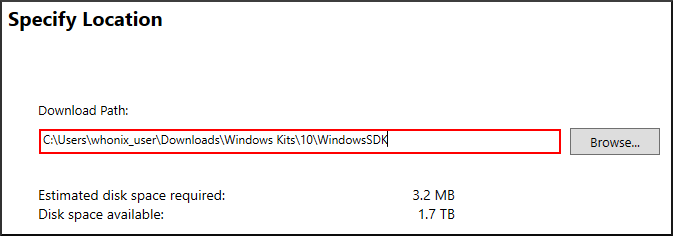
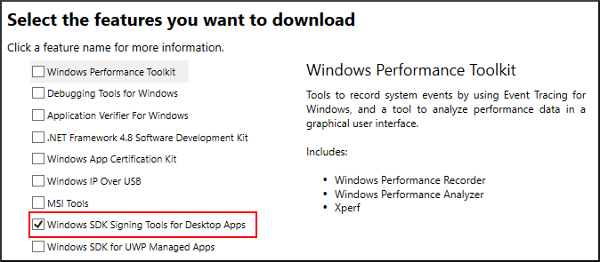
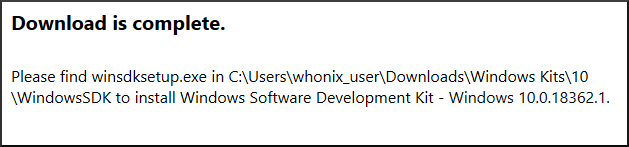
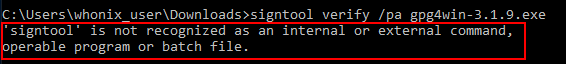

We believe security software like Kicksecure needs to remain Open Source and independent. Would you help sustain and grow the project? Learn more about our 11 year success story and maybe DONATE!
Use signtool.exe
to sign or verify digital signatures for
Windows applications.
Introduction
- Digital signatures are a tool enhancing download security. They are commonly used across the internet and nothing special to worry about.
- Optional, not required: Digital signatures are optional and not mandatory for using Kicksecure, but an extra security measure for advanced users. If you've never used them before, it might be overwhelming to look into them at this stage. Just ignore them for now.
- Learn more: Curious? If you are interested in becoming more familiar with advanced computer security concepts, you can learn more about digital signatures here: Verifying Software Signatures
Authenticode employs digital signature technology to ensure the authorship and integrity of binary data, such as installable software.Microsoft Windows website
Authenticode enables vendors of downloadable executable code (like plug-ins or ActiveX controls) to attach digital certificates to their products. This reassures end users about the code's source and confirms it hasn't been altered. It allows users to decide whether to accept or reject online software components before downloading.Microsoft Security Glossary
Install SignTool
This guide provides steps to install SignTool on Windows 11 (stable release). If you're using earlier versions of Windows (Windows XP, Vista, 7, 8 or 10), replace the Windows 11 SDK installer mentioned below with the appropriate SDK Installer from the Windows SDK archives.
SignTool
is a Windows command-line utility using Authenticode
to digitally sign and verify files, as well as timestamp them. It's part
of the Microsoft
Windows SDK. After setting it up, you can use SignTool to verify the
gpg4win package prior to installation.
1. Get the Installer:
- Visit this link.
Right-clickon the installer download option →Save→ Once downloaded,Runit.
2. Specify Installation Path: Upon the installer's launch:
Continue→ set the installation path toC:\Users\\Downloads\Windows Kits\\WindowsSDK→Next.
Figure: Choose SDK Installation Path

3. Choose the Correct Package:
The Windows SDK installer offers various packages. You only need Windows SDK Signing Tools for Desktop Apps (SignTool). Note that package names might vary across SDK versions. For instance, in SDK for Windows 8.1, the package containing SignTool is labeled as Windows Software Developmental Kit, different from its counterpart in Windows 10.
Figure: Select SignTool Package

After selecting the necessary package, click on Download. Once the installation finishes, you can close the installer.
Figure: SDK Installation Completion

4. Done.
Installation of SignTool has been completed.
Usage
signtool.exe
can be utilized to sign and verify
applications. Note the consistent lowercase usage for both commands.
Details on installing and using Authenticode and
signtool.exe are currently undocumented in the Kicksecure wiki. Implementing
Authenticode is not specific to
Kicksecure.
It's essential to understand that while Kicksecure provides
documentation on many topics relevant to its users, it isn't the primary
source for all Windows tools or processes, especially those created and
maintained by external entities like Microsoft. If a tool like
signtool.exe lacks user-friendly documentation from
Microsoft, it isn't inherently the responsibility of Kicksecure to fill
that gap.
Kicksecure focuses on its specific domain and features, ensuring that users have the best experience within that scope. While we strive to offer comprehensive guidance, we cannot be expected to compensate for the documentation shortfalls of every third-party tool or process. For more in-depth details or tutorials on using such tools, users are encouraged to consult the tool's official documentation or forums.
User Account Control
User Account Control (UAC) is closely related to
Authenticode.
Figure: Windows signature verification window for VirtualBox

Authenticode vs. User Account Control
SignTool verifies the digital signature of a file, particularly checking the signing certificate's issuer, revocation status, and validity.
Although manually using signtool verify can enhance
security, many users might skip this step.[1]
Windows automatically validates the digital signatures of drivers and
downloaded apps, especially those needing elevated privileges for
installation, through User Account Control (UAC). However, this
auto-validation is less comprehensive than manual
signtool verify checks.
Authenticode vs. Other Verification Tools
Authenticode is based on The Broken Certificate Authority System, which is dependent on trustworthy third parties.
Alternative verification standards or tools like OpenPGP or signify can deliver end-to-end digital software signatures without relying on third parties. If available, these alternatives are recommended.
VirtualBox
Windows' VirtualBox isn't signed using OpenPGP / gpg / signify but with Authenticode. This method is standard for most Windows downloadable applications.
On Linux based operating systems, osslsigncode can be
used to verify the integrity of VirtualBox. See Verification of
VirtualBox.
Troubleshooting
SignTool is not Recognized
Figure: SignTool not Recognized Error

This error means the SignTool executable is not accessible through
cmd.exe. A common cause for this error is SignTool was not
installed in the user's PATH.
To fix this issue add signtool.exe to your system PATH.
[2]
Note: This solution is temporary and works only until the
command prompt is closed. When the command prompt is restarted
signtool.exe must be added to the system PATH again.
1. Open a command prompt.
In the Windows Start menu, run.
cmd.exe
2. Add the path to signtool.exe to your
system PATH.
The default installation path for signtool.exe:
x86 systems: C:\Program Files (x86)\Windows Kits\<windows_version>\bin\x86
x64 systems: C:\Program Files (x86)\Windows Kits\<windows_version>\bin\x64Run the following command to add "path\to\signtool.exe" to your system PATH. Also be sure to add the Windows version to the path.
set PATH="path to signtool.ext";%PATH%
For example, the following command adds the path for an
x64 system.
set PATH="C:\Program Files (x86)\Windows Kits\<windows_version>\bin\x64";%PATH%
SignTool Certificate Chain Error
Figure: Root Certificate Error

This error message occurs if the /pa switch is not used
with SignTool. This is because the default SignTool verify
some_file.exe command uses the Windows Driver Verification
Policy. [3] In order for the file to verify properly the
/pa switch must be used so SignTool uses the Default
Authentication Verification Policy.
Footnotes
- How frequently do you notice websites providing Windows software downloads along with digital software signatures?
- https://www.godaddy.com/help/windows-cmd-signtool-is-not-recognized-as-an-internal-or-external-command-operable-program-or-batch-file-19987
- See stackoverflow for further information: Why's My Root Certificate Not Trusted?
Categories: Documentation